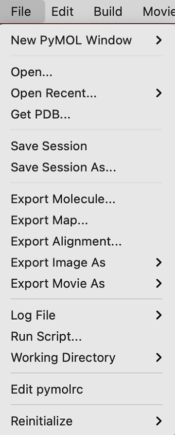
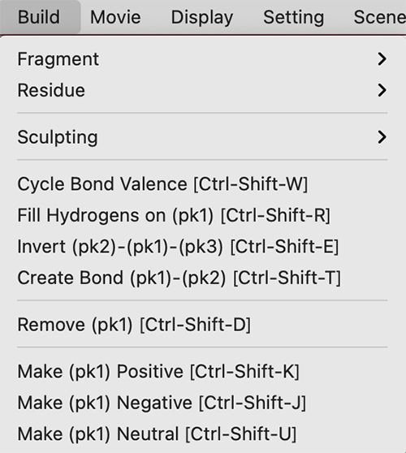
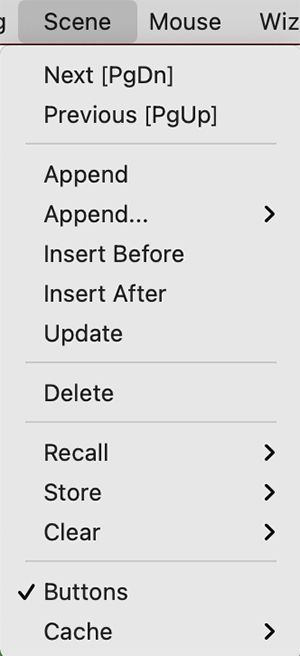
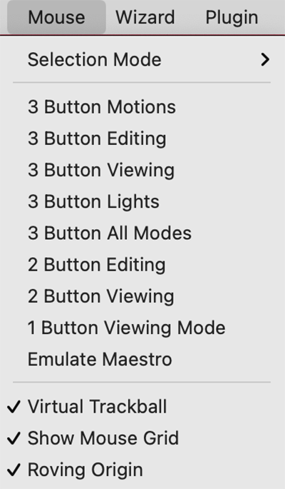
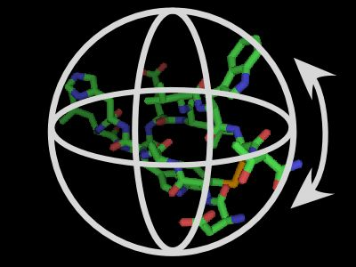
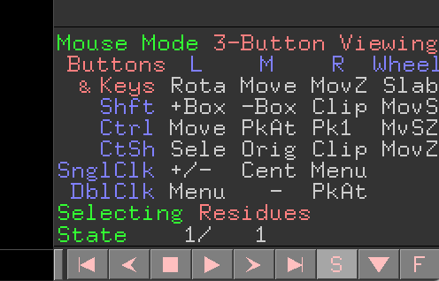
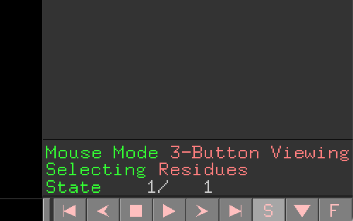

第3章 External GUIの使い方
File
New PyMOL Window
新しくPyMOLのウィンドウを別に立ち上げることができます。ある構造ファイルを開いている時にまったく別の構造ファイルを開く必要があるときには、このNew PyMOL Windowを使って立ち上げると良いでしょう。一方で類似構造のファイルと比較したいという場合には、新しいPyMOL Windowを開かずに1つのPyMOLウィンドウの中で開くと、構造比較する上で便利です。
Defaultでは新しいPyMOL Windowを開くと同時に、ユーザー独自の初期設定ファイルである.pymolrc（存在する場合）とインストールしたプラグインをともに読み込んでくれます。
ignore .pymolrc and plugins (-k)の方では、この機能を無効にし、PyMOLのインストール時の初期設定のまま利用できるようになります。ターミナルからpymol -kで起動した場合と同じ効果です。
Open...
構造ファイルを読み込むことができます。これを選択すると読み込みたいファイルを選択する画面に移行します。ロード可能な構造ファイルを選択することでInternal GUIのViewer部分に構造が表示されます。
Open Recent...
最近ロードしたことのある構造ファイルの履歴を表示しています。ここから構造ファイルをロードすることも可能です。
Get PDB...
PDBに登録されている構造ファイルや電子密度ファイルのIDを指定することで、インターネットから直接ダウンロードして開くことができます。これはまずこのメニューを選択すると次のような別メニューが開きます。

PDB IDのところにデータベースのIDを入力します。また、下の方にはPDB Structure Optionsが存在し、chain nameの箇所で表示したいChainを指定できます。A chainのみを表示したい場合はAを入力します（指定しない場合はすべて表示されます）。
その構造ファイルに固有のAssemblyを考慮した表示も可能となっています。Biological assemblyを考慮して表示させたい場合は1を、非対称ユニットをロードしたい場合は何も指定しないでおきます。これについては第2章の分子構造のロードのページも参考にしてください。
構造ファイルはworking directory上にダウンロードされます。デフォルトの構造ファイル形式はmmCIFとなっています。working directoryについてはこちらも参照してください。
Save Session & Save Session as...
現在開いている表示状態をセッションファイルに保存します。ショートカットキーはCtrl-SまたはCommand + Sです。スライド作成や論文のために生体分子の表示形式を保存しておくととても便利なので、ぜひこの機能は活用していきましょう。
Save Sessionはいわゆる「上書き保存」と同じで、Save Session as...は「ファイル名を指定して保存」と同じ機能です。一度もセッションファイルを作成していない状態でSave Sessionを押すと自動的に「ファイル名を指定して保存」に切り替わります。
拡張子はPyMOL Session File（.pse）とPyMOL Show File（.psw）の2つを選ぶことができます。pseファイル形式で保存すると、再びこのファイルを開いたときにPyMOLの作業状態をそのまま復元するのに対し、pswファイル形式で保存した場合は、このファイルを開くと全画面表示＋Internal GUIとExternal GUIが表示されない状態で開かれます。つまり、pswファイルは編集用というよりは完全に表示用に向いています。
pswファイルを開いたときの例。Internal GUIとExternal GUIが表示されません。
一応、この状態からでも上部メニューの[Display] -> [Internal GUI]と[External GUI] -> [Visible]をクリックすればいつものGUIが表示されるようになるので覚えておくと良いでしょう。
Export molecule...
現在画面上に開いている生体分子オブジェクトをファイルとして出力します。詳細は第2章 構造ファイルのエクスポート を御覧ください。
Export map...
.ccp4などの電子密度マップなどを出力します。電子密度マップについては第5章 結晶構造の電子密度マップを表示するなどで参照してください。マップオブジェクトがロードされた状態で選択すると以下のようなダイアログが現れます。
保存したいマップオブジェクトを選びSaveボタンを押してファイル名を入力することで保存されます。デフォルト拡張子は.ccp4です。
Export alignment...
この機能を利用するためには類似のタンパク質間でのアライメントオブジェクトを生成しておく必要があります。アライメントオブジェクトについては第4章 オブジェクトの重ね合わせを参照してください。
Export Image As...
画像を保存するだけでなく、3Dモデリングへの出力にも対応しています。
PNG...
PNG形式の画像を保存することができます。これについての詳細は第2章の画像の保存を参照してください。
VRML 2...
表示しているモデルをwireframe/VRMLの形式で座標情報をエクスポートすることができます。mesh表示やSurface表示にも対応しています。 タンパク質の3Dプリンタでの出力のときに利用できますが、PyMOLだけでなく他のソフトウェアとの様々な工程を経る必要があるため、詳細はここでは割愛します。
クオリティを上げたい場合は、以下のオプションを利用すると良いそうです。
set surface_quality, 1
set cartoon_sampling, 20
COLLADA...
COLLADAというXMLベースのオープン3Dグラフィック形式で出力することができます。PyMOLのcartoon, stick, line, sphere, surfaceなどのスタンダードな表示形式に対応して出力することができます。PyMOL 1.7.3.2から正式実装されました。拡張子は.daeです。
上記VRML 2の後発ですが、こちらの形式で出力して3Dプリンタ出力やBlenderなどでの編集も行えるようになるかもしれません。PyMOL 2.4からはglTF (GL Transmission Format)という形式でも出力できるようになるそうです。VRML 2のときのクオリティオプションコマンドも利用できます。
POV-Ray...
POV-Rayで読み込めるように拡張子.povで出力します。
Export Movie As...
動画を出力することができます。
MPEG...
Quick time...
PNG Images...
Log File
PyMOLで操作記録を取ることができます。
Open...
Resume...
Append...
Close
Run Script...
Working Directory
作業ディレクトリのパスを変更します。macOSでアプリケーションからPyMOLを起動させた場合、デフォルトの作業ディレクトリ(以降wd)はホームディレクトリ、ターミナルからコマンドでPyMOLを起動させた場合には、そのターミナル上での作業ディレクトリになっています。
Get PDB...を利用する場合など、ファイルの読み込み・書き出しは、この作業ディレクトリのパスを基準に考慮する必要があります。Linuxまたはターミナルの操作に慣れている方にとっては言うまでもない概念でしょう。
PyMOLのコマンドラインからはcdコマンドを使うことで変更することができます。
# Working Directoryをデスクトップに設定する
# (Linux, macOSの場合)
cd ~/Desktop
Edit pymolrc
PyMOLを起動したときに自動的に実行される設定であるpymolrcファイルを編集することができます。bash, zshで言うところの.bashrc, .zshrcと同様に、pymolrcに設定を書き込んでおけば、描画に関する設定やPATH設定などを上書きしておくことができます。macOS, Linuxの場合はpymolrcファイルはホームディレクトリ上に生成されます。
set sphere_scale, .22
set sphere_scale, .13, elem H
set dash_gap, 0
set dash_gap, .15
set dash_length, .05
set dash_round_ends, 0
set dash_radius, .05
set label_size, 18
set cartoon_loop_radius, 0.1
set cartoon_putty_radius, 0.2
set cartoon_oval_length, 0.8
set label_digits, 3
set ray_opaque_background, 0
set dash_length, 0.2500
set cartoon_gap_cutoff, 0
設定はPyMOLコマンド形式で記述する必要があります。
Reinitialize
Reinitializeはその名の通りPyMOLを再初期化してくれます。表示されているオブジェクトを含め再起動したかのようにしてくれるEverythingと、設定値だけを再起動するもののsettings系のどちらかを選ぶことができます。
Everything
Everythingを選ぶと、PyMOLで現在開いているすべての生体分子オブジェクトは消去され、完全にPyMOLを再起動したような状態になります。それまで保存していなかった作業内容も予告内容なしに消えてしまうので、慎重にこのボタンを押してください。
Original Settings
これらのOriginal Settings, Stored Settingsのメニューでは、現在表示されている生体分子オブジェクトは消去されません。こちらで再初期化してくれるのはPyMOLの描画の設定値です。例えばPyMOLのヘリックスの描画の太さ(set cartoon_oval_length, 0.8)やループの太さ(set cartoon_loop_radius, 0.1)、ミッシング領域の描画の有無(set cartoon_gap_cutoff, 0)……などといった、PyMOLの描画全体に影響を及ぼす値を初期値に修正した状態で再び描画し直してくれるのがこのOriginal Settingsです。
上のEdit pymolrcで描画設定を変更していた場合でも、このOriginal Settingsを押すとPyMOL内部の設定値で上書きされてしまうので注意してください。
Stored Settings
保存しておいた描画の設定値を呼び出してくれます。これは下記のStore Current Settingsの機能と対応しています。
Store Current Settings
現在の描画の設定値を保存しておいてくれます。これを一度しておけば、以降PyMOLのプログラムを終了するまで上記のStored Settingsからその設定値を呼び出すことができます。
これらReinitializeについてPyMOLのコマンドラインから行う場合は以下の通りです。
reinitialize [ what [, object ]]
whatにはeverythingまたはsettingsが入ります。settings部分にはsettings, original_settings, stored_settingsが選べるようです。defaultはeverything。
objectにはオブジェクト名を入れることができます。
Build
Buildのメニューからは、PyMOLに内蔵されている化合物のフラグメントやアミノ酸残基のデータを利用して任意の化合物またはポリペプチド鎖の構造モデルを生成することができるようになっています。主な利用方法としては、既存のタンパク質構造をロードしたあとに、その末端に長い人工ペプチドを取り付けたモデル構造を作成することや、0から任意のポリペプチド鎖を作成して計算科学の研究の初期構造に利用するという使い方があります。
Buildメニューは以下の通りです。
Fragment
ここでは主要な化学小分子の骨格を、フラグメントをつなぎ合わせるような感覚で構築することができます。使い方の例を動画で見てみましょう。
このように、何もない状態から様々な化学骨格を持った分子を作っていくことができます。……ただ、結構癖があって、任意に小分子を作るというのには慣れが必要で、構造最適化部分も含めて他のソフトウェアを使った方がいいような気もします。
やり方としては、まずこのFragmentメニューからベースとなる化合物骨格を選んできます（しかしこの時点でベンゼン環がないので結構アレなんですけれど……。） その後、マウスのPkAt機能（参考：マウス操作の詳細,原子ピッキング）を使って原子を1つピッキングした状態にします。この状態でさらにFragmentメニューからフラグメントを選ぶと、そのピックされた原子部分に選択された化学骨格が生えていきます。これを繰り返していくことで、任意の化合物を作ることが理論上可能です。
化合物の二面角や角度を手動で調整したい場合は、マウス操作で調節して作り出してください（参考：マウス操作の詳細,二面角をピッキング）。また、一応お気持ち程度ですが、後で紹介するSculptingという機能を使うと、簡単な化合物の構造最適化をかけてくれて、無理のない構造に落ち着かせることができます。
Residue
このメニューは20種類の正準アミノ酸の残基のデータの他に、N末端キャッピング用のAcetylとC末端キャッピング用のN-Methylが存在しています。キャッピングとはMDシミュレーション上で使われる人工的な修飾で、末端部分の電荷をニュートラルにするために使われます。それ以外の方はあまり利用することがないでしょう。
AltキーとA~Zの文字を組み合わせて入力することでマウスを使わずに簡単にポリペプチド鎖を作成していくことができます。例えば、PyMOLを開き、BuildメニューからResidue -> Helixを選び、Internal GUI画面上でAltキーを押しながらACDVAARHKと連続して押すと
このようにαヘリックス様のタンパク質フラグメントが簡単に生成されました。同様にして、antiparallel, parallelのβシート構造も作り出すことができます。ただしループ構造は自動で生成してくれませんので、手動で任意の二面角を調節して作り出してください。（参考：マウス操作の詳細,二面角をピッキング）
また、プログラミングしたいときに便利な点として、cmd._alt(chr(XX))を入力することでそのキーを入力した扱いにすることができます。XXにはASCII CODEが入ります（A: 65, B: 66, C: 67, ... 88: X, Y: 89, Z: 90）。
| 表示 | 残基名 | cmd | ショートカットキー |
|---|---|---|---|
| Acetyl | アセチル基 | cmd._alt(chr(66)) | Alt-B |
| Alanine | アラニン | cmd._alt(chr(65)) | Alt-A |
| Amine | アミン | - | |
| Aspartate | アスパラギン酸 | cmd._alt(chr(68)) | Alt-D |
| Asparagine | アスパラギン | cmd._alt(chr(78)) | Alt-N |
| Arginine | アルギニン | cmd._alt(chr(82)) | Alt-R |
| Cysteine | システイン | cmd._alt(chr(67)) | Alt-C |
| Glutamate | グルタミン酸 | cmd._alt(chr(69)) | Alt-E |
| Glutamine | グルタミン | cmd._alt(chr(81)) | Alt-Q |
| Glycine | グリシン | cmd._alt(chr(71)) | Alt-G |
| Histidine | ヒスチジン | cmd._alt(chr(72)) | Alt-H |
| Isoleucine | イソロイシン | cmd._alt(chr(73)) | Alt-I |
| Leucine | ロイシン | cmd._alt(chr(76)) | Alt-L |
| Lysine | リジン | cmd._alt(chr(75)) | Alt-K |
| Methionine | メチオニン | cmd._alt(chr(77)) | Alt-M |
| N-Methyl | N-メチル | cmd._alt(chr(90)) | Alt-Z |
| Phenylalanine | フェニルアラニン | cmd._alt(chr(70)) | Alt-F |
| Proline | プロリン | cmd._alt(chr(80)) | Alt-P |
| Serine | セリン | cmd._alt(chr(83)) | Alt-S |
| Threonine | スレオニン | cmd._alt(chr(84)) | Alt-T |
| Tryptophan | トリプトファン | cmd._alt(chr(87)) | Alt-W |
| Tyrosine | チロシン | cmd._alt(chr(89)) | Alt-Y |
| Valine | バリン | cmd._alt(chr(86)) | Alt-V |
Sculpting
Sculptingは「彫刻する」というような意味ですが、PyMOLのこの機能では、上で生成したような小分子またはポリペプチド鎖について簡単な構造最適化をかけてくれるようです。
ただし、この機能は現在PyMOLの開発者としてはサポートの対象外とされているようで、現時点ではこの機能が改善されることや発見されたバグの修正が行われることはないとされています（参考：PyMOL: Unsupported Features）。したがって、ここでは簡単な使い方の紹介を留める程度にしておきます。
まずSculptingメニューの先にあるサブメニューの2段めにあるSculptingにチェックを入れます（この操作はコマンドでset sculpting, onとすることでもできます）。そしてその下にあるactivateをクリックすると、表示されている分子の構造最適化が自動的に始まります。ただし、この操作は画面に表示されている分子に対して行われてしまうことに注意してください。コマンドではsculpt_activate all とします。途中で止めたい場合はsculpt_deactivate allと入力します。allの部分を生体分子のオブジェクト名にすればその分子のみを構造最適化させることができます。
Cycle Bond Valence [Ctrl-Shift-W]
現在選択中の「結合」に対して、その結合を芳香環のような結合として設定させます。ショートカットキーはCtrl（Macの場合はCommandでも可）とShift-Wの同時押しです。
結合を選択する方法はマウス操作の詳細,二面角をピッキングと同じです。この機能で結合を選択したあと、Ctrl-Shift-Wキーを同時押しすることで、その結合が芳香環様結合として設定させることができます。例えばFragmentメニューに存在するCyclohexyl[Alt-6]にこの機能を適用してベンゼン環に変更したいという場合、6つすべての炭素-炭素結合についてこの操作を行う必要があります。このとき水素原子は自動で増減します。こののち、上記のSculptingによる構造最適化を行えばすべての炭素原子が同一平面上に位置するようになったベンゼン環構造が得られます（が、水素原子の位置がきれいな構造じゃない気がします）。
Fill Hydrogens on (Pk1) [Ctrl-Shift-R]
Pk1で選択されている「原子」に対して、その原子につながっている結合数に応じて水素原子を取り付けてくれます。ショートカットキーはCtrl（Macの場合はCommandでも可）とShift-Rの同時押しです。コマンドはh_fillです。
invert (pk2)-(pk1)-(pk3) [Ctrl-Shift-E]
PkAt機能で原子を3つ選んだ状態、すなわちPk1, Pk2, Pk3が存在している状態でこのコマンドを選択すると、Pk1から先のフラグメントがPk1-Pk2軸回りに180度反転した位置に変化します。ショートカットキーはCtrl（Macの場合はCommandでも可）とShift-Eの同時押しです。コマンドはinvertです。
create bond (pk1)-(pk2) [Ctrl-Shift-T]
PkAt機能で原子を2つ選んだ状態、すなわちPk1, Pk2が存在する状態でこのコマンドを選択すると、2原子の間に結合が形成されます。ショートカットキーはCtrl（Macの場合はCommandでも可）とShift-Tの同時押しです。内部コマンドの処理としてはbond ; unpickが働いています。
これは環を閉じたいときに有用だったり、描画上の問題で離れている2原子を結合したような状態に見せたいときに有用です。
ちなみにコマンド専用ですが、bondコマンドを使うときにbond order=2とすると二重結合として結合を表示させられます。三重結合のときはbond order=3、芳香環様結合のときはbond order=4とします。
Remove (pk1) [Ctrl-Shift-D]
Pk1で選択されている原子を削除します。また、PkTbで選択されている結合についても削除することができます。ショートカットキーはCtrl（Macの場合はCommandでも可）とShift-Dの同時押しです。コマンドはremove_pickedです。
Make (Pk1) positive [Ctrl-Shift-K] / Make (Pk1) negative [Ctrl-Shift-J] / Make (Pk1) neurtral [Ctrl-Shift-U]
Pk1で選択されている原子の電荷を+1, -1, 0にそれぞれ設定させることができます。設定値はLabel機能のother properties, formal chargeを押すと確認することができます。
Edit
主にUndo, Redo機能を取り扱います。注意していただきたいのは、この機能は主に3.3 Buildで原子の座標に変更を加えたものに対してのみ適用される仕様であり、分子のカラーリングや視点の変更、表示形式の変更には対応していません。
Undo [Ctrl-Z]
Buildメニューから行った原子の座標変更や原子＆結合の生成・消去についての操作を取り消すことができます。ショートカットキーはCtrl（Macの方はCommandでも可）-Zの同時押しです。下記の"Max Atom Count for Undo/Redo"で設定した値までは何度も操作を取り消すことができます。
Redo [Ctrl-Y]
Undoで取り消した操作を再び呼び戻すことができます。ショートカットキーはCtrl（Macの方はCommandでも可）-Yの同時押しです。
Max Atom Count for Undo/Redo
Undo/Redoで戻せる操作の数を設定できます。デフォルトでは1000となっています。設定値は他に10000, 100000のほか、Unlimited（制限なし）やDisable Undo(実質0)を選ぶことができます。設定値を超えた分の操作は消去され、呼び出すことができなくなります。
一見無制限が良いように思えますが、PyMOLを動かしているマシンのメモリをオーバーして保存しようとするとPyMOLがクラッシュしてしまいます。現実的には1000で問題ないと思います。
コマンドはset suspend_undo_atom_count, 1000です。1000の部分は任意のint値を入れることができます。
Auto-Copy Images
PyMOL 1.8には遅くとも実装されていたようですが、Incentive版のPyMOL 2.1から全プラットフォームで実装されたようです。マニュアルによれば
auto_copy_images (boolean, default: on) controls whether or not PyMOL automatically copies images from the OpenGL viewport into the system’s clipboard.
とあるのですが、使い方がよくわかりませんでした。
Setting
Scene
Externalメニューに存在するScene機能は論文・ポスター発表や動画作成の時にとても重宝します。PyMOLに表示したタンパク質の構造を色んな角度から撮影したり、色んなカラーリングや設定値を試したり、それらをつなげて動画にまとめて出力したいという試行錯誤は、読み手に分かりやすい論文・ポスター用の図を作成する上で必要な作業だと思われます。そんなとき、1つの作業セッションファイル中に複数の表示状態を保存することができるこのScene機能をぜひ活用しましょう。
この動画で示しているように、左下に001, 002, 003という小さなボタンが現れています。ここをクリックすることで、前もって保存しておいたカメラ角度(view/camera)、色使い(color)、表示形式（rep/representations）に戻って表示させることができます。
このボタンはSceneのappendまたはStore機能によって生成することができます。内容を上書きするにはUpdateを、削除するにはDeleteを用います。Recall, Store, Clearの3つは、Append, Deleteの使い方に似ていますが、キーボードのF1〜F12を使ったショートカットキーと自動的に結びつけてくれるため使い勝手が良くなります。
Sceneボタンをマウスでクリックして白くなっているときをactive状態と呼びます。
Next [PgDn] / Previous [PgUp]
すでに複数のSceneボタンが存在しているときに動作します。Nextで次の、Previousで前のSceneを表示させることができます。Next, Previousはそれぞれキーボードの[PgDn], [PgUp]ボタンにショートカットキーが割り当てられているので、マウスを使わずにSceneを切り替えることができます。
Append
現在の表示状態をSceneに追加します。デフォルトではSceneオブジェクト名は自動的に001からの連番になります。
内部処理としては、コマンドでscene new, storeが作動します。newは自動的に連番のIDを割り振ります。new以外の文字を入力すると、そのオブジェクト名でSceneが生成されます。
Append (Camera, Color, Reps, Reps+Color)
Camera (view), Color, Repsはそれぞれ撮影角度、表示されている分子のカラーリング、表示された分子の表示形式を表しています。上述のAppendではこれらをすべて保存してSceneに登録するのに対して、こちらのサブメニューではその一部のみをSceneに登録します。
内部処理としては、コマンドでscene new, store, view=0/1, color=0/1, rep=0/1としており、0
のとき各情報を保存しない、1のときに情報を保存する、としています。
Insert Before / After
現在表示している画面の状態のScene登録を、現在ActiveになっているSceneの上(before)または下(after)に登録させます。これによって、上述の Next [PgDn] / Previous [PgUp] との円滑な連携を図ることができます。
内部処理としては、コマンドでscene <scene_name>, insert_before/insert_afterとしています。
Update
現在表示している画面の状態を、ActiveになっているSceneボタンの上に上書きします。内部処理としては、コマンドでscene <scene_name>, updateとしています。
Delete
現在ActiveになっているSceneボタンを削除します。内部処理としては、コマンドでscene <scene_name>, clearとしています。
Recall
下記のStoreで保存されたSceneを呼び出すことができます。
上で見たような連番のSceneボタンと異なり、F1〜F12ボタンと自動的に結びつけて操作することが可能です。例えば、F1でStoreされたSceneをF1キーを押すだけで呼び出すことができます。
Store
F1〜F12ボタンと自動的に結びつけられたSceneボタンを生成することができます。使い方はAppendと似ています。
Windows/Linuxの場合はCtrlキーと, macOSの場合はCommandキーとF1〜F12とすることで現在表示されている画面をSceneに登録することができます。
Clear
F1〜F12ボタンと自動的に結びつけられたSceneボタンを削除します。
Buttons
画面左下にSceneのボタンを表示するかしないかを設定できます。
コマンドではset scene_buttons, 0/1でそれぞれ表示しない（0）、表示する（1）を設定できます。
Cache
現在ActiveになっているSceneに対し、enableまたはoptimizeを選択することでそのSceneのキャッシュを生成します。通常、Scene間の表示形式の切り替え時には再度新たに描画のON/OFFを内部で行っているため、わずかに切り替えに時間がかかりますが、キャッシュを生成しておくとあらかじめ最適化された描画を記憶しておくためにSceneの切り替え時間が短くなります。これは特に分子表面の表示のON/OFFが関係している時に有効です。しかしその反面多量のメモリを確保する必要があるので、初回の操作は重くなります。
disableとするとキャッシュ機能を無効化します。（read_onlyはちょっとわかりませんでした……。）
cacheをoptimizeにすると、今ActiveになっているSceneに対して現在登録されている他のSceneからの切り替えをすべて計算するため、かなり重い処理になります。
コマンドではcache action [, scenes [, state ]]となります。scenesはスペース区切りで複数指定できます。使用例は以下の通りです。
cache enable
cache optimize
cache optimize, F1 F2 F5
Mouse
ここではマウス操作についてのメニューを表示しています。マウス操作については2.4 マウス操作を適宜参照することをおすすめします。
Selection Mode
+/-機能（デフォルト設定では3-Button Viewingモードで左のシングルクリック）で選択範囲を増減させるときの、選択範囲の単位を変更します。デフォルトはResiduesで、他にもAtoms, Chains, Segments, Objects, Molecules, C-alphasから選択することができます。
GUI上では、右下のメニューからSelectingの部分をクリックすることで、選択範囲を変更することができます。
コマンドからはset mouse_selection_mode, (value)で変更できます。設定値0, 1, 2, 3 ,4, 5, 6がそれぞれatoms, residues, chains, segments, objects, molecules, C-alphasに対応します。
Mouse Mode
2.4.1 操作モードも参照して下さい。マウスのボタン配置と操作方法を、3 Button Motions, 3 Button Editing, 3 Button Viewing, 3 Button Lights, 3 Button All Modes, 2 Button Editing, 2 Button Viewing, 1 Button Viewing Mode, Emulate Maestroの中から選択することができます。
デスクトップ型パソコンを使っていて、左クリック、ホイールクリック（ミドルクリック）、右クリックが揃ったマウスを使える環境であれば、3 Button式を選ぶと機能を最大限活用することができます。一方、最近はホイールクリックのないタイプのタッチパッド（Macbookなど）もありますので、そういった方は2 Button式のメニューを選ぶことをおすすめします。
Emulate MaestroはSchrödinger Maestroのマウス操作感覚とほぼ同じような設定になっています。
コマンドからも設定できるように思えるのですが、見かけだけ変わるようで実際の操作が変わっていないように見えます……。素直にGUIメニューから設定変更した方がよいと思われます。
Virtual Trackball
この機能をONにすると（デフォルトはON）、分子が写っている画面の中央に見えないトラックボールが置かれてあるような状態になります。
このトラックボールの外にマウスカーソルをあわせて視点を変更しようとしたときの挙動が、Virtual Trackballの設定値によって変動します（トラックボール内部はON/OFFともに同じです）。ONのときにトラックボールの外で視点を変更しようとすると、Z軸だけが回転するような動きになります。OFFのときは全体がトラックボールの上にあるような動きになります。
コマンドからはset virtual_trackball, (value)で変更できます。0がOFF, 1がONです。
The virtual trackball works as if there is an invisible ball in the center of the scene. When you click and drag on the screen, it is as if you put your finger on the sphere and rotated it in approximately the same manner. If you click outside the sphere, then you get rotation about the Z-axis only.
Show Mouse Grid
GUIメニュー右下のマウスの操作方法メニューの表示をON/OFFにします。
 
Roving Origin
Originの位置を、視点の移動とともに追従するかそうでないかを設定します。デフォルトはONです。Originとは回転操作を行いたいときの回転中心のことです。Originの位置は任意の選択範囲に対してActionパネルからOriginを選ぶことで設定できます。これがONのとき、視点を平行移動（マウス操作のMove参照）させてもOriginの位置が画面に対して同じ位置に留まるよう更新されますが、OFFにすると視点を平行移動させてもOrigin位置を自動で更新しなくなります。
この効果は、PyMOL上で分子を画面の端っこに置いた状態で設定値を変えて視点の変更しようとすると分かりやすいと思います。
コマンドからはset roving_origin, (value)で変更できます。0がOFF, 1がONです。
Wizard
Wizardは複雑な操作をユーザーとの対話形式で行えるようにしてくれるためのツール群です。Wizardには以下の種類が用意されており、選択することでInternal GUI画面にマウスで操作できるメニューが現れます。特に、MutagenesisとDensityのWizardは重宝することでしょう。
Appearance
Measurement
Mutagenesis
タンパク質の任意のアミノ酸の場所にアミノ酸点変異を導入したモデルを作成してくれます。実験科学者が「もしここに変異を入れたら隣り合うアミノ酸と干渉するだろうか？」ということを簡単に試してみたり、計算科学者が点変異を加えたタンパク質の分子動力学シミュレーションの初期座標として用いたりすることができます。また各アミノ酸にはrotamerと呼ばれる、エネルギー的に安定ないくつかのコンフォメーションのライブラリが内蔵されている上、周囲のアミノ酸の座標を検知した上で最もエネルギー的に安定なrotamerを自動的に選択してくれます。
詳細は第5章で。
Pair Fitting
Density
タンパク質の構造決定法がX線結晶構造解析法, 中性子回折法, クライオ電子顕微鏡によるものだった場合、その電子密度を表示させることができます。